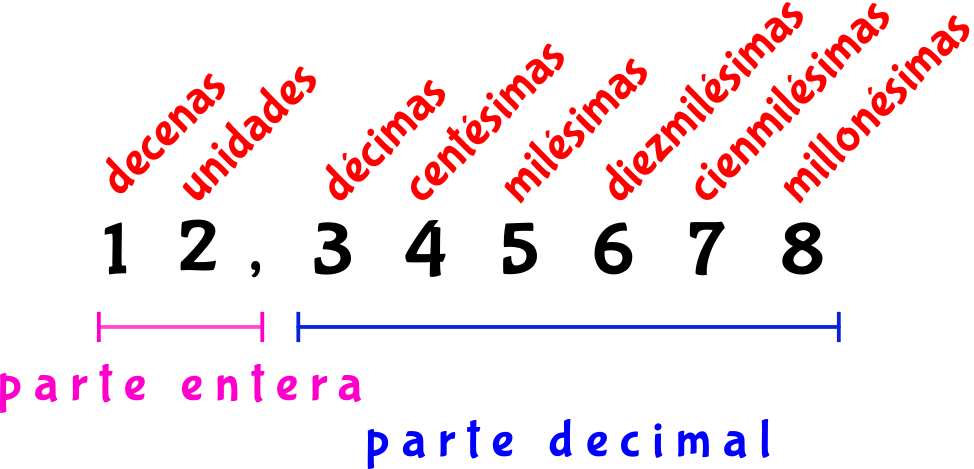
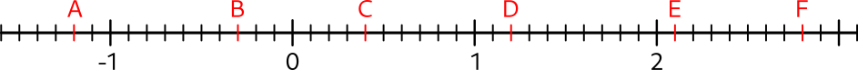

El valor posicional indica el valor de una cifra dependiendo de su posición dentro de un número. Por ejemplo, en \( 2.345678 \): 
1 Señala la parte entera y la decimal e indica la posición de cada una de las cifras de los siguientes números:
2 Escribe los siguientes números decimales:
3 Clasifica los números decimales que se presentan a continuación:
Para representar un número decimal en la recta real, localiza primero la unidad más cercana (por ejemplo, entre \( 2 \) y \( 3 \) si el número es \( 2.5 \)) y divide el espacio en diez partes iguales. Marca el punto correspondiente.
4 Representa en la recta numérica los siguientes números:
5 Indica a qué números corresponden los siguientes decimales de la recta real:
Para comparar números decimales, observa la parte entera. Si son iguales, compara las décimas, centésimas, etc. Por ejemplo, \( 2.35 > 2.3 \) porque \( 35 > 30 \).
6 Ordena de menor a mayor los siguientes decimales:
7Indica un número decimal que se encuentre entre los dos dados:
Para sumar o restar números decimales, alinea las cifras por la coma decimal y realiza la operación como con números enteros. Agrega ceros si es necesario para igualar las cifras decimales.
8 Realiza las siguientes sumas y restas de números decimales:
Multiplica los números como si fueran enteros. Luego, cuenta el total de cifras decimales en los factores y colócalas en el resultado desde la derecha.
9 Realiza las siguientes multiplicaciones de decimales:
Divide como con números enteros. Mantén la coma decimal en el dividendo y colócala en el cociente directamente sobre su posición original.
Multiplica el divisor y el dividendo por una potencia de 10 que elimine los decimales del divisor. Luego, realiza la división.
10 Realiza las siguientes divisiones de números decimales:
10
Multiplicando equivale a mover la coma decimal a la derecha tantos espacios como ceros haya. Dividiendo equivale a mover la coma decimal a la izquierda tantos espacios como ceros haya.
Multiplicando equivale a mover la coma decimal a la izquierda tantos espacios como ceros haya. Dividiendo equivale a mover la coma decimal a la derecha tantos espacios como ceros haya.
11 Realiza las siguientes operaciones de números decimales con potencias de 10:
Sigue la jerarquía de operaciones: primero realiza las potencias y raíces, luego multiplicaciones y divisiones, y por último sumas y restas.
12 Resuelve las siguientes operaciones combinadas con decimales:
12
Divide el numerador entre el denominador. Si es necesario, agrega ceros al numerador para realizar la división.
13 Pasa a decimal las siguientes fracciones y señala su tipo:
Para convertir un decimal exacto a fracción, escribe el número como fracción con denominador \( 10^n \), donde \( n \) es la cantidad de cifras decimales. Simplifica si es necesario.
14 Pasa los siguientes números decimales a fracción:
Para aproximar un número decimal, observa la cifra en la posición siguiente a la que deseas redondear. Si es mayor o igual a 5, aumenta la cifra en la posición deseada en una unidad. Si es menor, deja la cifra igual.
14 Aproxima los siguientes números decimales como se indica:
El error absoluto es la diferencia en valor absoluto entre el valor real y el valor aproximado: \( E_a = |V_r - V_a| \).
El error relativo es el cociente entre el error absoluto y el valor real: \( E_r = \frac{E_a}{|V_r|} \). Se expresa como fracción o porcentaje.
15 Calcula el error absoluto y relativo cometido en las siguientes parejas de valores: